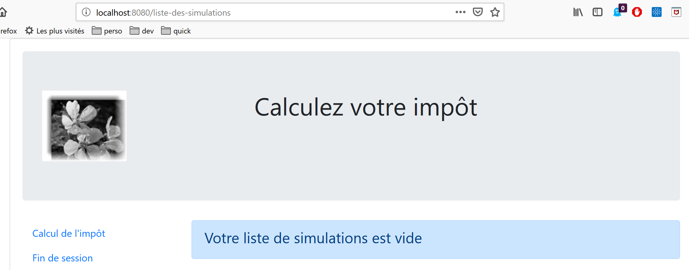
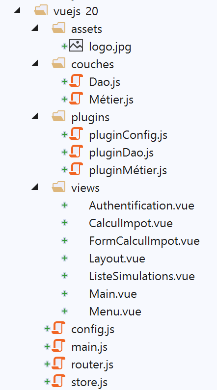
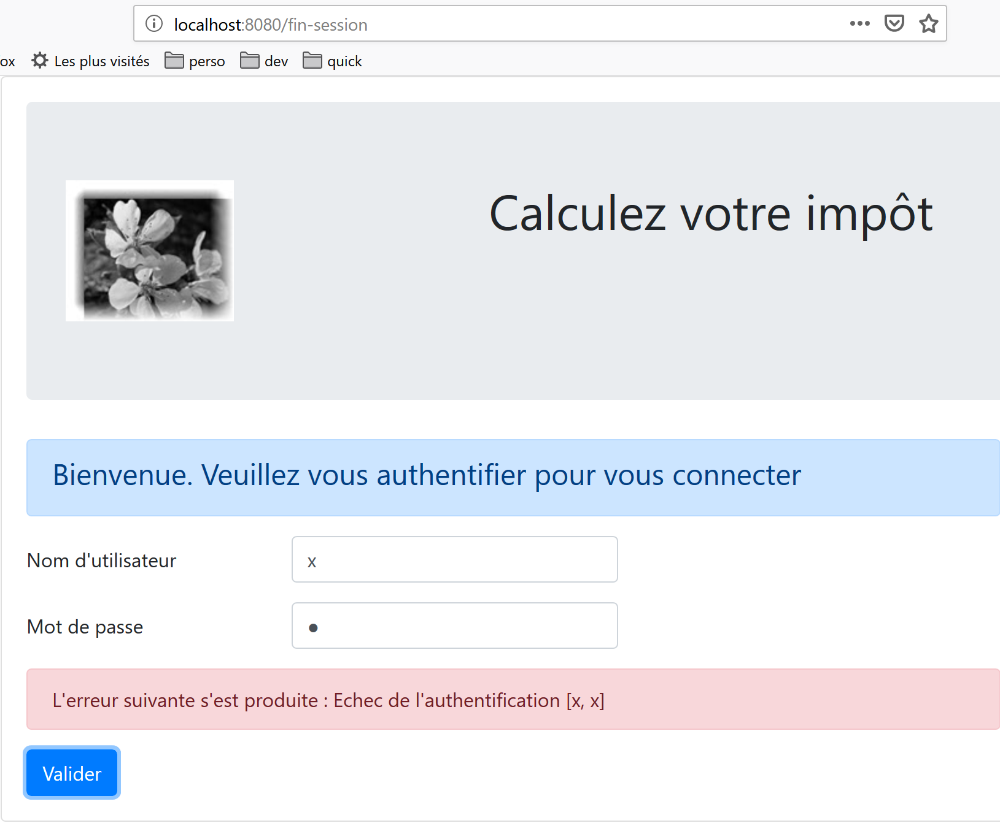
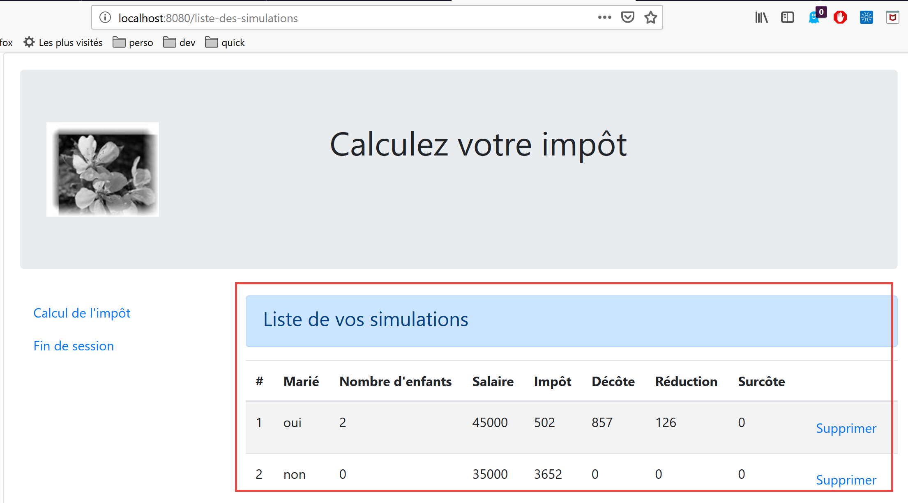
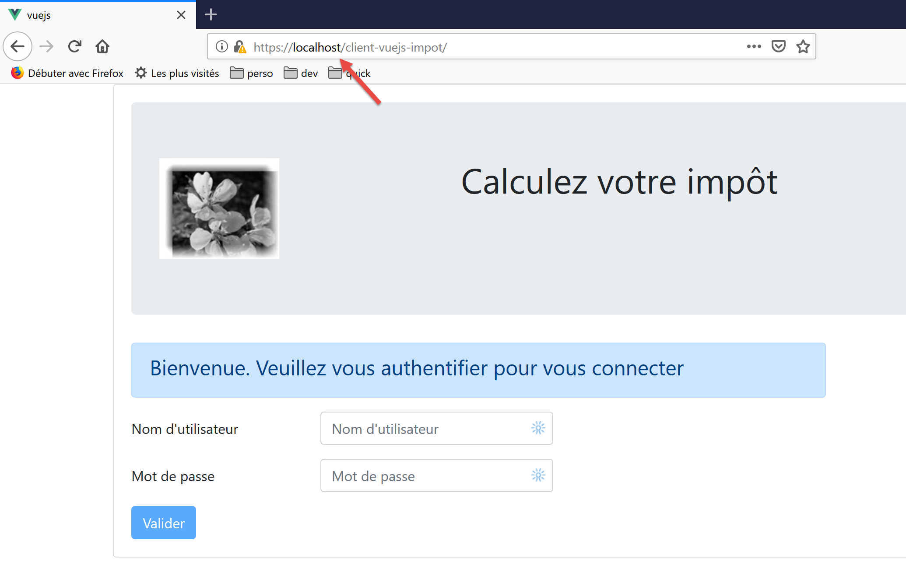
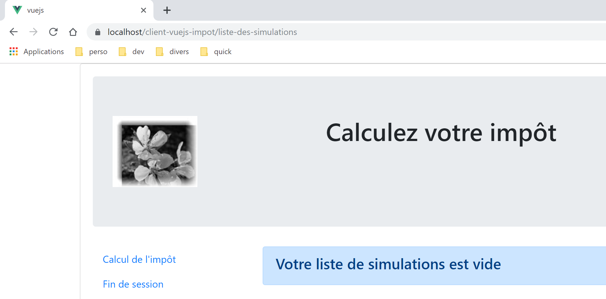

18. Cliente Vue.js do servidor de cálculo de impostos
18.1. Architecture
Vamos implementar uma aplicação cliente/servidor com a seguinte arquitetura:

O servidor de cálculo de impostos será a versão 14 desenvolvida no documento |https://tahe.developpez.com/tutoriels-cours/php7|
18.2. As vistas da aplicação
As vistas da aplicação [vuejs-10] são as da versão 13 do documento |https://tahe.developpez.com/tutoriels-cours/php7| do servidor de cálculo de impostos quando este é utilizado no modo HTML. No entanto, na aplicação em questão, estas vistas serão geradas pelo cliente JavaScript e não pelo servidor PHP.
A primeira vista é a vista de autenticação:

A segunda vista é a do cálculo do imposto:

A terceira vista é a que apresenta a lista das simulações realizadas pelo utilizador:

O ecrã acima mostra que é possível eliminar a simulação n.º 1. Obtém-se então a seguinte vista:

Se eliminarmos agora a última simulação, obtemos a seguinte nova vista:

18.3. Elementos do projeto [vuejs-20]
A estrutura do projeto [vuejs-20] é a seguinte:

Os elementos do projeto são os seguintes:
- [assets/logo.jpg]: o logótipo do projeto;
- [couches]: as camadas [métier] e [dao] da aplicação;
- [plugins]: os plug-ins da aplicação;
- [views]: as vistas da aplicação;
- [config.js]: configura a aplicação;
- [router.js]: define o encaminhamento da aplicação;
- [store.js]: a loja de [Vuex];
- [main.js]: o script principal da aplicação;
18.3.1. As camadas [métier] e [dao]
18.3.1.1. A camada [dao]
A camada [dao] é implementada pela classe [Dao] do parágrafo |vuejs-10|
18.3.1.2. A camada [métier]
A camada [métier] é implementada pela classe [Métier] do documento |https://tahe.developpez.com/tutoriels-cours/php7|. Foi-lhe adicionado o seguinte método [setTaxAdminData]:
// construtor
constructor(taxAdmindata) {
// this.taxAdminData: dados da administração fiscal
this.taxAdminData = taxAdmindata;
}
// setter
setTaxAdminData(taxAdmindata) {
// this.taxAdminData: dados da administração fiscal
this.taxAdminData = taxAdmindata;
}
O método [setTaxAdminData] faz o mesmo que o construtor. A sua presença permite a seguinte sequência:
- instanciar a classe [Métier] com uma instrução [métier=new Métier()] quando se pretende instanciar a classe, mas ainda não se dispõe do dado [taxAdminData];
- e, posteriormente, preencher a sua propriedade [taxAdminData] através de uma operação [métier.setTaxAdminData(taxAdmindata)];
18.3.2. O ficheiro de configuração [config]
O ficheiro [config.js] é o seguinte:
// utilização da biblioteca [axios]
const axios = require('axios');
// tempo limite das solicitações HTTP
axios.defaults.timeout = 2000;
// a base de dados do servidor de cálculo de impostos URL
// o esquema [https] causa problemas no Firefox porque o servidor de cálculo
// de impostos envia um certificado autoassinado. Funciona bem com o Chrome e o Edge. O Safari não foi testado.
axios.defaults.baseURL = 'https://localhost/php7/scripts-web/impots/version-14';
// vamos utilizar cookies
axios.defaults.withCredentials = true;
// exportação da configuração
export default {
axios: axios
}
Esta configuração corresponde à biblioteca [axios] que a camada [dao] utiliza para efetuar as suas consultas HTTP. Note-se, na linha 8, que o servidor opera numa porta segura [https].
18.3.3. Os plugins
Os plugins [pluginDao, pluginMétier, pluginConfig] têm como objetivo criar três novas propriedades na função/classe [Vue]:
- [$dao]: terá como valor uma instância da classe [Dao];
- [$métier]: terá como valor uma instância da classe [Métier];
- [$config]: terá como valor o objeto exportado pelo ficheiro de configuração [config];
[pluginDao]
export default {
install(Vue, dao) {
// adiciona uma propriedade [$dao] à classe Vue
Object.defineProperty(Vue.prototype, '$dao', {
// quando Vue.$dao é referenciado, devolvemos o segundo parâmetro [dao]
get: () => dao,
})
}
}
[pluginMétier]
export default {
install(Vue, métier) {
// adiciona uma propriedade [$métier] à classe Vue
Object.defineProperty(Vue.prototype, '$métier', {
// quando Vue.$métier é referenciado, o segundo parâmetro passa a ser [métier]
get: () => métier,
})
}
}
[pluginConfig]
export default {
install(Vue, config) {
// adiciona uma propriedade [$config] à classe Vue
Object.defineProperty(Vue.prototype, '$config', {
// quando Vue.$config é referenciado, o segundo parâmetro passa a ser [config]
get: () => config,
})
}
}
18.3.4. A persiana [Vuex]
O store de [Vuex] é implementado pelo seguinte ficheiro [store]:
// plugin Vuex
import Vue from 'vue'
import Vuex from 'vuex'
Vue.use(Vuex);
// armazenamento Vuex
const store = new Vuex.Store({
state: {
// a tabela de simulações
simulations: [],
// o n.º da última simulação
idSimulation: 0
},
mutations: {
// remoção da linha n.º índice
deleteSimulation(state, index) {
// eslint-disable-next-line no-console
console.log("mutation deleteSimulation");
// elimina-se a linha n.º [index]
state.simulations.splice(index, 1);
// eslint-disable-next-line no-console
console.log("store simulations", state.simulations);
},
// adição de uma simulação
addSimulation(state, simulation) {
// eslint-disable-next-line no-console
console.log("mutation addSimulation");
// n.º da simulação
state.idSimulation++;
simulation.id = state.idSimulation;
// adiciona-se a simulação à tabela de simulações
state.simulations.push(simulation);
},
// limpeza do estado
clear(state) {
state.simulations = [];
state.idSimulation = 1;
}
}
});
// exportação do objeto [store]
export default store;
Comentários
- linhas 2-4: o plugin [Vuex] está integrado no framework [Vue];
- linhas 8-13: colocamos no armazenamento do [Vuex] os seguintes elementos:
- [simulations]: a lista das simulações realizadas pelo utilizador;
- [idSimulation]: o número da última simulação realizada pelo utilizador;
Recorde-se que o armazenamento será partilhado entre as vistas e que o seu conteúdo é reativo: quando é alterado, as vistas que o utilizam são automaticamente atualizadas. Na nossa aplicação, apenas o elemento [simulations] precisa de ser reativo, não o elemento [idSimulation]. Deixámos este elemento no armazenamento por conveniência;
- linhas 14-40: as alterações permitidas no objeto [state] das linhas 8-13. Recorde-se que estas recebem sempre o objeto [state] das linhas 8-13 como primeiro parâmetro;
- linha 16: a alteração [deleteSimulation] permite eliminar uma simulação cujo número é [index];
- linha 25: a alteração [addSimulation] permite adicionar uma nova simulação à tabela de simulações;
- linha 35: a alteração [clear] permite reiniciar o objeto [state] das linhas 8 a 13;
18.3.5. O ficheiro de encaminhamento [router]
O ficheiro de encaminhamento é o seguinte:
// importações
import Vue from 'vue'
import VueRouter from 'vue-router'
// as vistas
import Authentification from './views/Authentification'
import CalculImpot from './views/CalculImpot'
import ListeSimulations from './views/ListeSimulations'
// plug-in de encaminhamento
Vue.use(VueRouter)
// as rotas da aplicação
const routes = [
// autenticação
{
path: '/', name: 'authentification', component: Authentification
},
// cálculo do imposto
{
path: '/calcul-impot', name: 'calculImpot', component: CalculImpot
},
// lista de simulações
{
path: '/liste-des-simulations', name: 'listeSimulations', component: ListeSimulations
},
// fim da sessão
{
path: '/fin-session', name: 'finSession', component: Authentification
}
]
// o router
const router = new VueRouter({
// as rotas
routes,
// modo de visualização das rotas no navegador
mode: 'history',
})
// exportação do router
export default router
Comentários
- linha 16: ao iniciar a aplicação, é apresentada a vista [Authentification], uma vez que o seu URL é a raiz [/];
- linha 20: a vista [CalculImpot] é apresentada quando a vista URL [/calcul-impot] é solicitada;
- linha 24: a vista [ListeSimulations] é apresentada quando a vista URL [/liste-des-simualtions] é solicitada;
- linha 28: a vista [Authentification] é apresentada quando a vista URL [/fin-session] é solicitada;
- linhas 33-38: é criado um objeto [router] com estas rotas (linha 35) e o modo [history] (linha 37) de gestão do URL;
- linha 41: este router é exportado;
18.3.6. O script principal [main.js]
O script [main.js] é o seguinte:
// importações
import Vue from 'vue'
// vista principal
import Main from './views/Main.vue'
// plug-in [bootstrap-vue]
import BootstrapVue from 'bootstrap-vue'
Vue.use(BootstrapVue);
// CSS bootstrap
import 'bootstrap/dist/css/bootstrap.css'
import 'bootstrap-vue/dist/bootstrap-vue.css'
// router
import router from './router'
// plugin [config]
import config from './config';
import pluginConfig from './plugins/pluginConfig'
Vue.use(pluginConfig, config)
// instanciação da camada [dao]
import Dao from './couches/Dao';
const dao = new Dao(config.axios);
// plug-in [dao]
import pluginDao from './plugins/pluginDao'
Vue.use(pluginDao, dao)
// instanciação da camada [métier]
import Métier from './couches/Métier';
const métier = new Métier();
// plugin [métier]
import pluginMétier from './plugins/pluginMétier'
Vue.use(pluginMétier, métier)
// store Vuex
import store from './store'
// inicialização da aplicação UI
new Vue({
el: '#«app»,
// o router
router: router,
// a persiana Vuex
store: store,
// a vista principal
render: h => h(Main),
})
Deve-se ter em conta os seguintes pontos:
- linhas 18-21: o objeto exportado pelo script [./config] estará disponível no atributo [Vue.$config], estando assim disponível em todas as vistas da aplicação. Isso era desnecessário neste caso, uma vez que o objeto [config] é utilizado apenas pelo script [main] (linha 25). No entanto, é frequente que a configuração seja necessária em várias vistas. Por isso, quisemos aqui manter o princípio de a disponibilizar num atributo da vista;
- linhas 24-25: instanciação da camada [dao]. A classe [Dao] é importada na linha 24 e, em seguida, instanciada na linha 25. O seu construtor aceita como único parâmetro o objeto [axios], uma propriedade de configuração;
- linhas 27-29: a camada [dao] é disponibilizada no atributo [$dao] de todas as vistas;
- linhas 31-37: repete-se a mesma sequência para a camada [métier]. O construtor da classe [Métier] tem como parâmetro [taxAdminData], que representa os dados da administração fiscal. Ainda não dispomos desses dados. O objeto [métier] da linha 33 terá, portanto, de ser preenchido posteriormente;
- linha 40: importa-se o store [Vuex];
- linhas 43-51: instanciamos a vista principal [Main] (linhas 5 e 50), passando-lhe dois parâmetros:
- linha 46: o router [router] definido na linha 16;
- linha 48: o store [Vuex] [store] definido na linha 40;
- em ambos os casos, o nome da propriedade está à esquerda e o seu valor à direita. Os nomes das propriedades [router, store] são definidos pelos frameworks [vue-router] e [vuex]. Os valores associados podem ser quaisquer;
18.4. As vistas da aplicação
18.4.1. A vista principal [Main]
O código da vista principal [Main] é o seguinte:
<!-- definição da vista HTML -->
<template>
<div class="container">
<b-card>
<!-- jumbotron -->
<b-jumbotron>
<b-row>
<b-col cols="4">
<img src="../assets/logo.jpg" alt="Cerisier en fleurs" />
</b-col>
<b-col cols="8">
<h1>Calculez votre impôt</h1>
</b-col>
</b-row>
</b-jumbotron>
<!-- erro na solicitação HTTP -->
<b-alert
show
variant="danger"
v-if="showError"
>L'erreur suivante s'est produite : {{error.message}}</b-alert>
<!-- vista atual -->
<router-view v-if="showView" @loading="mShowLoading" @error="mShowError" />
<!-- a carregar -->
<b-alert show v-if="showLoading" variant="light">
<strong>Requête au serveur de calcul d'impôt en cours...</strong>
<div class="spinner-border ml-auto" role="status" aria-hidden="true"></div>
</b-alert>
</b-card>
</div>
</template>
<script>
export default {
// nome
name: "app",
// estado interno
data() {
return {
// verifica o alerta de espera
showLoading: false,
// controla o alerta de erro
showError: false,
// controla a exibição da vista de encaminhamento atual
showView: true,
// uma mensagem de erro
error: ""
};
},
// gestores de eventos
methods: {
// erro na solicitação assíncrona
mShowError(error) {
// eslint-disable-next-line
console.log("Main evt error");
// é apresentada a mensagem de erro
this.error = error;
this.showError = true;
// oculta-se a vista encaminhada
this.showView = false;
// oculta a mensagem de espera
this.showLoading = false;
},
// exibir ou não um ícone de espera
mShowLoading(value) {
// eslint-disable-next-line
console.log("Main evt showLoading");
// exibir ou não o alerta de espera
this.showLoading = value;
}
}
};
</script>
Comentários
- A vista [Main] assegura a formatação da vista encaminhada e apresentada na linha 23:

- as linhas 5-15 apresentam a zona 1;
- a linha 23 apresenta a vista encaminhada [2];
- linhas 16-19: um alerta exibido apenas em caso de erro de comunicação com o servidor de cálculo do imposto;
- linhas 25-28: uma mensagem de espera apresentada em cada pedido HTTP feito ao servidor;
- todas as vistas serão apresentadas com este layout, uma vez que cada vista encaminhada é apresentada pelas linhas 20-24. A vista [Main] serve para factorizar o que pode ser partilhado pelas diferentes vistas;
- linha 23: cada vista encaminhada pode emitir três eventos:
- [loading]: foi lançada uma consulta HTTP. É necessário apresentar a mensagem de espera pela resposta;
- [error]: a solicitação HTTP terminou com um erro. É necessário apresentar a mensagem de erro e ocultar a vista encaminhada;
- linhas 38-49: o estado da vista:
- linha 41: [showLoading] controla a exibição da mensagem de espera pelo fim de uma solicitação HTTP (linha 25);
- linha 43: [showError] controla a exibição da mensagem de erro de uma consulta HTTP (linhas 17-21);
- linha 45: [showView] controla a exibição da vista encaminhada (linha 23);
- linhas 53-63: o método [mShowError] gere o evento [error] emitido pela vista encaminhada (linha 23);
- linhas 65-70: o método [mShowLoading] gere o evento [loading] emitido pela vista encaminhada (linha 23);
- linha 23: deve-se prestar atenção aos eventos [error] e [loading]. Estes só são interceptados se a vista encaminhada estiver visível ([showView=true]). É por isso que a vista encaminhada é inicialmente exibida (linha 45). Só é ocultada em caso de erro (linha 60). Para evitar este problema, poderia ter-se utilizado a diretiva [v-show] em vez de [v-if]. A diferença entre estas duas diretivas é a seguinte:
- [v-if=’false’] oculta o bloco controlado, removendo-o do código global HTML. Os eventos da vista encaminhada deixam, assim, de poder ser interceptados;
- [v-show=’false’] oculta o bloco controlado ao alterar o seu CSS, mas o código do bloco permanece presente no HTML global e pode, assim, interceptar os eventos da vista encaminhada;
18.4.2. A vista de layout [Layout]
O código da vista [Layout] é o seguinte:
<!-- definição HTML do layout da vista encaminhada -->
<template>
<!-- linha -->
<div>
<b-row>
<!-- área de três colunas à esquerda -->
<b-col cols="3" v-if="left">
<slot name="left" />
</b-col>
<!-- área de nove colunas à direita -->
<b-col cols="9" v-if="right">
<slot name="right" />
</b-col>
</b-row>
</div>
</template>
<script>
export default {
// parâmetros da vista
props: {
// controla a coluna da esquerda
left: {
type: Boolean
},
// controla a coluna da direita
right: {
type: Boolean
}
}
};
</script>
Comentários
- A vista [Layout] permite dividir a vista encaminhada em duas áreas:
- uma zona com 3 colunas Bootstrap à esquerda (linhas 7-9). Esta zona irá conter o menu de navegação, quando houver um;
- uma zona de 9 colunas à direita (linhas 11-13). Esta zona irá conter a informação fornecida pela vista encaminhada;
18.4.3. A vista [Authentification]
A vista de autenticação é a seguinte:

Esta vista é obtida a partir da [Layout], removendo a coluna da esquerda para exibir apenas a coluna da direita.
O seu código é o seguinte:
<!-- definição HTML da vista -->
<template>
<Layout :left="false" :right="true">
<template slot="right">
<!-- formulário HTML — os valores são enviados através da ação [authentifier-utilisateur] -->
<b-form @submit.prevent="login">
<!-- título -->
<b-alert show variant="primary">
<h4>Bienvenue. Veuillez vous authentifier pour vous connecter</h4>
</b-alert>
<!-- 1.ª linha -->
<b-form-group label="Nom d'utilisateur" label-for="user" label-cols="3">
<!-- área de introdução de dados do utilizador -->
<b-col cols="6">
<b-form-input type="text" id="user" placeholder="Nom d'utilisateur" v-model="user" />
</b-col>
</b-form-group>
<!-- 2.ª linha -->
<b-form-group label="Mot de passe" label-for="password" label-cols="3">
<!-- campo de introdução da palavra-passe -->
<b-col cols="6">
<b-input type="password" id="password" placeholder="Mot de passe" v-model="password" />
</b-col>
</b-form-group>
<!-- 3.ª linha -->
<b-alert
show
variant="danger"
v-if="showError"
class="mt-3"
>L'erreur suivante s'est produite : {{message}}</b-alert>
<!-- botão do tipo [submit] na terceira linha -->
<b-row>
<b-col cols="2">
<b-button variant="primary" type="submit" :disabled="!valid">Valider</b-button>
</b-col>
</b-row>
</b-form>
</template>
</Layout>
</template>
<!-- dinâmica da vista -->
<script>
import Layout from "./Layout";
export default {
// estado do componente
data() {
return {
// utilizador
user: "",
// a sua palavra-passe
password: "",
// controla a exibição de uma mensagem de erro
showError: false,
// a mensagem de erro
message: "",
// sessão iniciada
sessionStarted: false
};
},
// componentes utilizados
components: {
Layout
},
// propriedades calculadas
computed: {
// entradas válidas
valid() {
return this.user && this.password && this.sessionStarted;
}
},
// gestores de eventos
methods: {
// ----------- autenticação
async login() {
try {
// início da espera
this.$emit("loading", true);
// autenticação bloqueante junto do servidor
const response = await this.$dao.authentifierUtilisateur(
this.user,
this.password
);
// fim do carregamento
this.$emit("loading", false);
// análise da resposta
if (response.état != 200) {
// exibição do erro
this.message = response.réponse;
this.showError = true;
return;
}
// sem erro
this.showError = false;
// --------- agora são solicitados os dados da administração fiscal
// início da espera
this.$emit("loading", true);
// pedido em espera junto do servidor
const response2 = await this.$dao.getAdminData();
// fim do carregamento
this.$emit("loading", false);
// análise da resposta
if (response2.état != 1000) {
// exibição do erro
this.message = response2.réponse;
this.showError = true;
return;
}
// sem erro
this.showError = false;
// os dados recebidos são armazenados na camada [métier]
this.$métier.setTaxAdminData(response2.réponse);
// passa-se para a visualização do cálculo do imposto
this.$router.push({ name: "calculImpot" });
} catch (error) {
// o erro é reportado ao componente principal
this.$emit("error", error);
}
}
},
// ciclo de vida: o componente acaba de ser criado
created() {
// eslint-disable-next-line
console.log("authentification", "created");
// inicia-se uma sessão jSON com o servidor
// início da espera
this.$emit("loading", true);
// inicializa-se a sessão com o servidor - pedido assíncrono
// utiliza-se a promessa devolvida pelos métodos da camada [dao]
this.$dao
// inicialização de uma sessão jSON
.initSession()
// obteve-se a resposta
.then(response => {
// fim da espera
this.$emit("loading", false);
// análise da resposta
if (response.état != 700) {
// exibe-se o erro
this.message = response.réponse;
this.showError = true;
return;
}
// a sessão foi iniciada
this.sessionStarted = true;
})
// em caso de erro
.catch(error => {
// o erro é reportado para a vista [Main]
this.$emit("error", error);
});
}
};
</script>
Comentários
- linha 3: a vista [Authentification] utiliza apenas a coluna da direita do [Layout] (linhas 3 e 4);
- linhas 6-38: o formulário Bootstrap que gera a área 1 da captura de ecrã acima;
- linha 6: o evento [@submit] ocorre quando o utilizador clica no botão do tipo [submit] da linha 35. O modificador [prevent] determina que a página não seja recarregada durante o [submit]. Também se poderia ter escrito:
- uma tag <b-form> sem gestão do evento [submit];
- uma tag <b-button> com o evento [@click=’login’] e sem o atributo [type=’submit’];
Isso também funciona. A vantagem da solução escolhida é que o envio é efetuado não só com um clique no botão [Valider], mas também ao premir a tecla de validação ([Entrée]) nos campos de introdução de dados. Foi, portanto, por uma questão de comodidade para o utilizador que a solução [<b-form @submit.prevent="login">] foi escolhida neste caso;
- linhas 33-37: um aviso que aparece quando o servidor rejeita as credenciais introduzidas pelo utilizador:

- linha 35: o botão [Valider] nem sempre está ativo. O seu estado depende do atributo calculado [valid] das linhas 71-73. O atributo [valid] é verdadeiro se:
- houver algum valor nos campos [user, password] do formulário;
- a sessão jSON tiver sido iniciada. Inicialmente, esta sessão não foi iniciada (linha 59) e, por isso, o botão [Valider] está inativo.
- linhas 49-60: o estado da vista;
- [user] representa a entrada do utilizador no campo [user] (linhas 12-17) do formulário. A diretiva [v-model] da linha 15 estabelece uma ligação bidirecional entre a entrada do utilizador e o atributo [user] da vista;
- [password] representa a entrada do utilizador no campo [password] (linhas 19-24) do formulário. A diretiva [v-model] da linha 22 estabelece uma ligação bidirecional entre a entrada do utilizador e o atributo [password] da vista;
- [showError] controla (linha 29) a exibição do alerta das linhas 26-31;
- [message] é a mensagem de erro (linha 31) a apresentar no alerta das linhas 26 a 31;
- [sessionStarted] indica se a sessão jSON com o servidor foi iniciada ou não. Inicialmente, este atributo tem o valor [false] (linha 59). A sessão jSON com o servidor é inicializada no evento [created] do ciclo de vida da vista, linhas 126-156. Se o servidor responder positivamente, o atributo [sessionStarted] é alterado para [true] (linha 149);
- linhas 126-156: a função [created] é executada quando a vista [Authentification] foi criada (não necessariamente ainda apresentada). Em segundo plano, é então inicializada uma sessão jSON com o servidor. Sabe-se que esta é a primeira ação a realizar com o servidor de cálculo de impostos. Para tal, utiliza-se a camada [dao] da aplicação (linha 134). Todos os métodos desta camada são assíncronos. Aqui, utiliza-se a promessa (Promise) devolvida pelo método [$dao.initSession], que inicia a sessão jSON com o servidor.
- linhas 138-150: o código executado quando o servidor devolve a sua resposta sem erros;
- linha 142: verifica-se a propriedade [état] da resposta. Esta deve ter o valor [700] para que a operação seja bem-sucedida. Caso contrário, ocorreu um erro cuja causa é indicada na propriedade [response.réponse] (linha 144). Nesse caso, é apresentada a mensagem de erro da vista (linha 145);
- linha 149: verifica-se que a sessão jSON foi iniciada;
- linhas 152-155: o código executado em caso de erro. Este é reportado à vista pai [Main], que
- exibirá o erro;
- ocultará a mensagem de espera;
- ocultará a vista encaminhada, a vista [Autentification];
- linhas 79-124: o método [login] processa o clique no botão [Valider];
- linha 79: o método foi prefixado com a palavra-chave [async] para permitir a utilização da palavra-chave [await], linhas 84 e 103;
- linhas 84-87: chamada bloqueante ao método [$dao.authentifierUtilisateur(user, password)]. Teria sido possível utilizar uma promessa [Promise], tal como foi feito na função [created]. Queríamos variar os estilos. Não há risco de bloquear o utilizador, pois colocámos um [timeout] de 2 segundos em todas as solicitações HTTP. Ele não terá de esperar muito tempo. Além disso, não pode fazer nada enquanto o servidor não tiver devolvido a sua resposta, pois, nessa altura, o botão [Valider] permanece inativo;
- linha 91: o servidor de cálculo do imposto envia respostas jSON, todas com a estrutura [{‘action’:action, ‘état’:val, ‘réponse’:réponse}]. A autenticação foi bem-sucedida se [état==200]. Caso contrário, é exibida uma mensagem de erro, linhas 93-94;
- linha 98: oculta-se uma eventual mensagem de erro de uma operação anterior;
- linhas 99-116: solicitam-se agora ao servidor os dados da administração fiscal que permitem o cálculo do imposto. Em [this.$métier], temos uma instância da classe [Métier] que, por enquanto, não pode fazer nada, pois não dispõe desses dados;
- linha 103: os dados da administração fiscal são solicitados ao servidor através de uma operação bloqueante;
- linhas 107-112: a resposta do servidor é analisada. Deve ter um valor de estado igual a 1000; caso contrário, significa que ocorreu um erro. Neste último caso, é apresentada a mensagem de erro (linhas 109-110);
- linhas 113-118: caso a operação seja bem-sucedida, procede-se a:
- ocultamos a mensagem de erro, linha 114;
- transmitem-se os dados da administração fiscal para a camada [métier] (linha 116);
- exibe-se a vista [CalculImpot], linha 118. Recorde-se que [this.$router] designa o router da aplicação. O método [push] permite definir a próxima vista encaminhada. Aqui, designamo-la pelo seu atributo [name]. Também a poderíamos ter designado pelo seu atributo [path]. Estas informações encontram-se no ficheiro de encaminhamento:
// cálculo do imposto
{
path: '/calcul-impot', name: 'calculImpot', component: CalculImpot
},
- linhas 119-122: o [catch] é acionado quando uma das duas solicitações HTTP falha (servidor indisponível, tempo de espera esgotado, etc.). O erro é então comunicado à vista pai [Main], que o exibirá, ocultando a mensagem de espera e a vista [Authentification];
18.4.4. A vista [CalculImpot]
A vista [CalculImpot] é a seguinte:

- [1]: um menu de navegação ocupa a coluna da esquerda da vista encaminhada;
- [2]: o formulário de cálculo do imposto ocupa a coluna da direita da vista direcionada;
O código da vista [CalculImpot] é o seguinte:
<!-- definição HTML da vista -->
<template>
<div>
<Layout :left="true" :right="true">
<!-- formulário de cálculo do imposto à direita -->
<FormCalculImpot slot="right" @resultatObtenu="handleResultatObtenu" />
<!-- menu de navegação à esquerda -->
<Menu slot="left" :options="options" />
</Layout>
<!-- área de exibição dos resultados do cálculo do imposto abaixo do formulário -->
<b-row v-if="résultatObtenu" class="mt-3">
<!-- área vazia com três colunas -->
<b-col cols="3" />
<!-- área com nove colunas -->
<b-col cols="9">
<b-alert show variant="success">
<span v-html="résultat"></span>
</b-alert>
</b-col>
</b-row>
</div>
</template>
<script>
// importações
import FormCalculImpot from "./FormCalculImpot";
import Menu from "./Menu";
import Layout from "./Layout";
export default {
// relatório interno
data() {
return {
// opções do menu
options: [
{
text: "Liste des simulations",
path: "/liste-des-simulations"
},
{
text: "Fin de session",
path: "/fin-session"
}
],
// resultado do cálculo do imposto
résultat: "",
résultatObtenu: false
};
},
// componentes utilizados
components: {
Layout,
FormCalculImpot,
Menu
},
// métodos de gestão de eventos
methods: {
// resultado do cálculo do imposto
handleResultatObtenu(résultat) {
// o resultado é construído em cadeia HTML
const impôt = "Montant de l'impôt : " + résultat.impôt + " euro(s)";
const décôte = "Décôte : " + résultat.décôte + " euro(s)";
const réduction = "Réduction : " + résultat.réduction + " euro(s)";
const surcôte = "Surcôte : " + résultat.surcôte + " euro(s)";
const taux = "Taux d'imposition : " + résultat.taux;
this.résultat =
impôt +
"<br/>" +
décôte +
"<br/>" +
réduction +
"<br/>" +
surcôte +
"<br/>" +
taux;
// exibição do resultado
this.résultatObtenu = true;
// ---- atualização da loja [Vuex]
// uma simulação de +
this.$store.commit("addSimulation", résultat);
}
}
};
</script>
Comentários
- linha 4: as duas colunas do [Layout] estão aqui presentes;
- linha 6: o formulário de cálculo do imposto ocupa a coluna da direita. Este emite o evento [resultatObtenu] quando o resultado do cálculo do imposto é obtido. Note-se que os nomes dos eventos e os nomes dos métodos que os gerem não podem conter caracteres acentuados;
- linha 8: o menu de navegação ocupa a coluna da esquerda;
- linhas 11-20: o resultado do cálculo do imposto é apresentado abaixo do formulário:

- linha 11: o resultado só é apresentado se o atributo [résultatObtenu] (linha 47) tiver o valor [true];
- linhas 34-48: o estado da vista:
- [options]: a lista de opções do menu de navegação. Esta tabela é passada como parâmetro ao componente [Menu], linha 8;
- [résultat]: o resultado do cálculo do imposto. Este resultado é uma cadeia de caracteres HTML. É por isso que se utilizou a diretiva [v-html] na linha 17 para o apresentar;
- [résultatObtenu]: o valor booleano que controla a exibição do resultado, linha 11;
- linhas 59-81: o método [handleResultatObtenu] apresenta o resultado do cálculo do imposto que lhe foi enviado pela vista filha [FormCalculImpot], linha 6. Este resultado é um objeto com as propriedades [impot, décôte, réduction, surcôte, taux, marié, enfants, salaire];
- linhas 61-75: insere-se o objeto [impot, décôte, réduction, surcôte, taux] num texto HTML que é visualizado pela linha 17 do modelo;
- linha 77: exibe-se este resultado;
- linha 80: chama-se a mutação [addSimulation] do armazenamento Vuex, que irá adicionar [résultat] às simulações já presentes no armazenamento;
18.4.5. O menu de navegação [Menu]
O menu de navegação é apresentado na coluna da esquerda das vistas encaminhadas:

O código da vista [Menu] é o seguinte:
<!-- definição HTML da vista -->
<template>
<!-- menu Bootstrap vertical -->
<b-nav vertical>
<!-- opções do menu -->
<b-nav-item
v-for="(option,index) of options"
:key="index"
:to="option.path"
exact
exact-active-class="active"
>{{option.text}}</b-nav-item>
</b-nav>
</template>
<script>
export default {
// parâmetros da vista
props: {
options: {
type: Array
}
}
};
</script>
Comentários
- as opções do menu são fornecidas pelo parâmetro [options] (linhas 7, 20-22);
- cada elemento da tabela [options] tem uma propriedade [text] (linha 12), que corresponde ao texto do link, e uma propriedade [path] (linha 9), que corresponde ao caminho da vista de destino do link;
18.4.6. A vista [FormCalculImpot]
Esta vista fornece o formulário de cálculo do imposto:

O seu código é o seguinte:
<!-- definição HTML da vista -->
<template>
<!-- formulário HTML -->
<b-form @submit.prevent="calculerImpot" class="mb-3">
<!-- mensagem em 12 colunas sobre fundo azul -->
<b-alert show variant="primary">
<h4>Remplissez le formulaire ci-dessous puis validez-le</h4>
</b-alert>
<!-- elementos do formulário -->
<!-- primeira linha -->
<b-form-group label="Etes-vous marié(e) ou pacsé(e) ?" label-cols="4">
<!-- botões de opção em 5 colunas-->
<b-col cols="5">
<b-form-radio v-model="marié" value="oui">Oui</b-form-radio>
<b-form-radio v-model="marié" value="non">Non</b-form-radio>
</b-col>
</b-form-group>
<!-- segunda linha -->
<b-form-group label="Nombre d'enfants à charge" label-cols="4" label-for="enfants">
<b-input
type="text"
id="enfants"
placeholder="Indiquez votre nombre d'enfants"
v-model="enfants"
:state="enfantsValide"
/>
<!-- eventual mensagem de erro -->
<b-form-invalid-feedback :state="enfantsValide">Vous devez saisir un nombre positif ou nul</b-form-invalid-feedback>
</b-form-group>
<!-- terceira linha -->
<b-form-group
label="Salaire annuel"
label-cols="4"
label-for="salaire"
description="Arrondissez à l'euro inférieur"
>
<b-input
type="text"
id="salaire"
placeholder="Salaire annuel"
v-model="salaire"
:state="salaireValide"
/>
<!-- eventual mensagem de erro -->
<b-form-invalid-feedback :state="salaireValide">Vous devez saisir un nombre positif ou nul</b-form-invalid-feedback>
</b-form-group>
<!-- quarta linha, botão [submit] em 5 colunas -->
<b-col cols="5">
<b-button type="submit" variant="primary" :disabled="formInvalide">Valider</b-button>
</b-col>
</b-form>
</template>
<!-- script -->
<script>
export default {
// estado interno
data() {
return {
// casado ou solteiro
marié: "non",
// número de filhos
enfants: "",
// salário anual
salaire: ""
};
},
// estado interno calculado
computed: {
// validação do formulário
formInvalide() {
return (
// salário inválido
!this.salaireValide ||
// ou número de filhos inválido
!this.enfantsValide ||
// ou dados fiscais não obtidos
!this.$métier.taxAdminData
);
},
// validação do salário
salaireValide() {
// deve ser um valor numérico >=0
return Boolean(this.salaire.match(/^\s*\d+\s*$/));
},
// validação dos filhos
enfantsValide() {
// deve ser um valor numérico >=0
return Boolean(this.enfants.match(/^\s*\d+\s*$/));
}
},
// gestor de eventos
methods: {
calculerImpot() {
// o imposto é calculado utilizando a camada [métier]
const résultat = this.$métier.calculerImpot(
this.marié,
this.enfants,
this.salaire
);
// eslint-disable-next-line
console.log("résultat=", résultat);
// completa-se o resultado
résultat.marié = this.marié;
résultat.enfants = this.enfants;
résultat.salaire = this.salaire;
// emite-se o evento [resultatObtenu]
this.$emit("resultatObtenu", résultat);
}
}
};
</script>
Comentários
- linhas 4-51: o formulário Bootstrap;
- linhas 11-17: um grupo de botões de opção com os respetivos rótulos;
- linhas 14-15: a baliza <b-form-radio> garante a exibição de um botão de opção:
- linha 14: a diretiva [v-model] garante que, ao clicar no botão, o atributo [marié] da linha 61 receba o valor [oui] (atributo [value="oui"]);
- linha 15: a diretiva [v-model] garante que, ao clicar no botão, o atributo [marié] da linha 61 receberá o valor [non] (atributo [value="non"]);
- linhas 19-29: a parte relativa à introdução do número de filhos:
- linha 24: a introdução do número de filhos está ligada ao atributo [enfants] da linha 63;
- linha 25: a validade da entrada é verificada pelo atributo calculado [enfantsValide] das linhas 87-89;
- linha 28: garante a exibição de uma mensagem de erro se a entrada for inválida;
- linhas 31-45: a parte relativa ao salário anual:
- linha 35: apresenta uma mensagem de ajuda logo abaixo do campo de introdução;
- linha 41: a entrada do salário está ligada ao atributo [salaire] da linha 65;
- linha 42: a validade da entrada é verificada pelo atributo calculado [salaireValide] das linhas 82-85;
- linha 45: garante a exibição de uma mensagem de erro se a entrada for inválida;
- linhas 48-50: um botão do tipo [submit]. Ao clicar neste botão ou ao validar uma entrada com a tecla [Entrée], é executado o método [calculerImpot] (linha 94);
- linha 49: o estado do botão (ativo/inativo) é controlado pelo atributo calculado [formInvalide] das linhas 71-80;
- linhas 71-80: o formulário é válido se:
- o número de filhos for válido;
- o salário for válido;
- a aplicação obteve do servidor os dados da administração fiscal que permitem o cálculo do imposto. Recorde-se que estes dados estão registados na propriedade [$métier.taxAdminData]. A vista [FormCalculImpot] pode ser apresentada antes de estes dados terem sido obtidos, uma vez que são solicitados de forma assíncrona ao mesmo tempo que ocorre a apresentação da vista. Aqui, assegura-se que o utilizador não possa clicar no botão [Valider] enquanto os dados não tiverem sido obtidos;
- linhas 94-109: o método de cálculo do imposto:
- linhas 96-100: é a camada [métier] que efetua este cálculo. Trata-se de um cálculo síncrono. Assim que o dado [taxAdminData] for obtido, o cliente [Vue] já não precisa de comunicar com o servidor. Tudo é feito localmente. Obtém-se um objeto [résultat] com as propriedades [impôt, décôte, surcôte, réduction, taux];
- linhas 104-106: adicionam-se as propriedades [marié, enfants, salaire] ao resultado;
- linha 108: o resultado é passado para a vista pai [CalculImpot] através do evento [resultatObtenu]. Esta vista é responsável por apresentar o resultado;
18.4.7. A vista [ListeSimulations]
A vista [ListeSimulations] apresenta a lista das simulações realizadas pelo utilizador:

O código da vista é o seguinte:
<!-- definição HTML da vista -->
<template>
<div>
<!-- formatação -->
<Layout :left="true" :right="true">
<!-- simulações na coluna da direita -->
<template slot="right">
<template v-if="simulations.length==0">
<!-- sem simulações -->
<b-alert show variant="primary">
<h4>Votre liste de simulations est vide</h4>
</b-alert>
</template>
<template v-if="simulations.length!=0">
<!-- existem simulações -->
<b-alert show variant="primary">
<h4>Liste de vos simulations</h4>
</b-alert>
<!-- tabela de simulações -->
<b-table striped hover responsive :items="simulations" :fields="fields">
<template v-slot:cell(action)="data">
<b-button variant="link" @click="supprimerSimulation(data.index)">Supprimer</b-button>
</template>
</b-table>
</template>
</template>
<!-- menu de navegação na coluna da esquerda -->
<Menu slot="left" :options="options" />
</Layout>
</div>
</template>
<script>
// importações
import Layout from "./Layout";
import Menu from "./Menu";
export default {
// componentes
components: {
Layout,
Menu
},
// estado interno
data() {
return {
// opções do menu de navegação
options: [
{
text: "Calcul de l'impôt",
path: "/calcul-impot"
},
{
text: "Fin de session",
path: "/fin-session"
}
],
// parâmetros da tabela HTML
fields: [
{ label: "#", key: "id" },
{ label: "Marié", key: "marié" },
{ label: "Nombre d'enfants", key: "enfants" },
{ label: "Salaire", key: "salaire" },
{ label: "Impôt", key: "impôt" },
{ label: "Décôte", key: "décôte" },
{ label: "Réduction", key: "réduction" },
{ label: "Surcôte", key: "surcôte" },
{ label: "", key: "action" }
]
};
},
// estado interno calculado
computed: {
// lista de simulações obtida no armazenamento Vuex
simulations() {
return this.$store.state.simulations;
}
},
// métodos
methods: {
supprimerSimulation(index) {
// eslint-disable-next-line
console.log("supprimerSimulation", index);
// eliminação da simulação n.º [index]
this.$store.commit("deleteSimulation", index);
}
}
};
</script>
Comentários
- linha 5: a vista ocupa as duas colunas do layout [Layout] das vistas encaminhadas;
- linhas 7-26: as simulações vão para a coluna da direita;
- linha 28: o menu de navegação é colocado na coluna da esquerda;
- linhas 8, 14, 20, 75: as simulações provêm do armazenamento [Vuex] [$this.store];
- linhas 8-13: alerta exibido quando a lista de simulações está vazia;
- linhas 14-25: a tabela HTML é apresentada quando a lista de simulações não está vazia;
- linhas 20-24: a tabela HTML é gerada por uma baliza <b-table>;
- linha 20: a tabela de simulações é fornecida pelo atributo calculado [simulations] das linhas 74-76;
- linha 20: a configuração da tabela HTML é definida pelo atributo calculado [fields] das linhas 58-69. Linha 67: a coluna-chave [action] é a última coluna da tabela HTML;
- linhas 21 a 23: modelo da última coluna da tabela HTML;
- linha 22: insere-se aqui um botão do tipo «ligação». Ao clicar nele, é chamado o método [supprimerSimulation(data.index)], em que [data] representa a linha atual (linha 21). [data.index] representa o número dessa linha na lista de linhas apresentadas;
- linha 28: geração do menu de navegação. As opções deste são fornecidas pelo atributo [options] das linhas 47-56;
- linhas 80-85: o método que responde ao clique num link [Supprimer] da página HTML;
- linha 84: é chamada a mutação [deleteSimulation] do store [Vuex] (ver parágrafo |vuejs-15|);
18.5. Execução do projeto

É também necessário iniciar o servidor [Laragon] (ver documento |https://tahe.developpez.com/tutoriels-cours/php7|) para que o servidor de cálculo de impostos fique online.
18.6. Implantação da aplicação num servidor local
Atualmente, o nosso cliente [Vue] está implementado num servidor de teste no URL [http://localhost:8080]. Vamos implementá-lo no servidor [Laragon], no URL e no [http://localhost:80]. Há várias etapas a realizar para chegar lá.
Etapa 1
Em primeiro lugar, vamos garantir que o cliente [Vue] seja implementado no servidor de teste, passando de URL para [http://localhost:8080/client-vuejs-impot/].
Criamos um ficheiro [vue.config.js] na raiz do nosso projeto atual [VSCode]:

O ficheiro [vue.config.js] [1] terá o seguinte conteúdo:
// vue.config.js
module.exports = {
// o serviço URL do cliente [vuejs] do servidor de cálculo de impostos
publicPath: '/client-vuejs-impot/'
}
Temos também de alterar o ficheiro de encaminhamento [router.js] [2]:
// importações
import Vue from 'vue'
import VueRouter from 'vue-router'
// as visualizações
import Authentification from './views/Authentification'
import CalculImpot from './views/CalculImpot'
import ListeSimulations from './views/ListeSimulations'
// plug-in de encaminhamento
Vue.use(VueRouter)
// rotas da aplicação
const routes = [
// autenticação
{
path: '/', name: 'authentification', component: Authentification
},
// cálculo do imposto
{
path: '/calcul-impot', name: 'calculImpot', component: CalculImpot
},
// lista de simulações
{
path: '/liste-des-simulations', name: 'listeSimulations', component: ListeSimulations
},
// fim da sessão
{
path: '/fin-session', name: 'finSession', component: Authentification
}
]
// o router
const router = new VueRouter({
// as rotas
routes,
// modo de visualização das rotas no navegador
mode: 'history',
// o URL básico da aplicação
base: '/client-vuejs-impot/'
})
// exportação do router
export default router
- linha 39: indica-se ao router que os caminhos das rotas definidas nas linhas 13-30 são relativos ao caminho definido na linha 39. Por exemplo, o caminho da linha 20, [/calcul-impot], passará a ser [/client-vuejs-impot/calcul-impot];
Pode-se então testar novamente o projeto [vuejs-20] para verificar a alteração dos caminhos da aplicação:

Passo 2
Vamos agora compilar a versão de produção do projeto [vuejs-20]:

- no [1-2], configuramos a tarefa [build] [2] no ficheiro [package.json] [1];
- em [3-5], executamos esta tarefa. É ela que irá construir a versão de produção do projeto [vuejs-20];
A execução da tarefa [build] ocorre num terminal de [VSCode]:


- no [3-6], os avisos indicam que o código gerado é demasiado grande e que seria necessário dividi-lo em [8]. Trata-se de uma questão de otimização da arquitetura do código que não abordaremos aqui;
- em [7], é-nos indicado que a pasta [dist] contém a versão de produção gerada:

- no [3], o ficheiro [index.html] é o ficheiro que será utilizado quando for solicitado o URL [https://localhost:80/client-vue-js-impot/];
Temos aqui um site estático que pode ser implementado em qualquer servidor. Vamos implementá-lo no servidor Laragon local (ver documento |https://tahe.developpez.com/tutoriels-cours/php7|). A pasta [dist] [2] é copiada para a pasta [<laragon>/www] [4], onde <laragon> é a pasta de instalação do servidor Laragon. Renomeamos esta pasta para [client-vuejs-impot] [5], uma vez que configurámos a versão de produção para funcionar na pasta URL [/client-vuejs-impot/].
passo 3
Adicionamos à pasta [client-vuejs-impot], que acabou de ser criada, o seguinte ficheiro [.htaccess]:
<IfModule mod_rewrite.c>
RewriteEngine On
RewriteBase /client-vuejs-impot/
RewriteRule ^index\.html$ - [L]
RewriteCond %{REQUEST_FILENAME} !-f
RewriteCond %{REQUEST_FILENAME} !-d
RewriteRule . /client-vuejs-impot/index.html [L]
</IfModule>

Este ficheiro é um ficheiro de configuração do servidor web Apache. Se não o colocarmos e solicitarmos diretamente o URL [https://localhost/client-vuejs-impot/calcul-impot], sem passar primeiro pelo URL [https://localhost/client-vuejs-impot/], obtemos um erro 404. Com este ficheiro, conseguimos, de facto, aceder à página [CalculImpot].
Feito isto, iniciamos o servidor Laragon, caso ainda não o tenhamos feito, e acedemos ao URL [https://localhost/client-vuejs-impot/]:

Convidamos o leitor a testar a versão de produção da nossa aplicação.
Podemos alterar o servidor de cálculo de impostos num aspeto: os cabeçalhos CORS que este envia sistematicamente aos seus clientes. Tal tinha sido necessário para a versão do cliente executada a partir do domínio [localhost:8080]. Agora que tanto o cliente como o servidor são executados no domínio [localhost:80], os cabeçalhos CORS tornam-se desnecessários.
Alteramos o ficheiro [config.json] da versão 14 do servidor:

- para [4], indicando que, a partir de agora, as solicitações CORS serão recusadas;
Guardemos esta alteração e voltemos a solicitar o URL [https://localhost/client-vuejs-impot/]. Deve continuar a funcionar.
18.7. Gestão das URL manuais
Em vez de utilizar corretamente os links do menu de navegação, o utilizador pode querer digitar manualmente os URL da aplicação no campo de endereço do navegador. Vamos, por exemplo, aceder ao URL [https://client-vuejs-impot/calcul-impot] sem passar pela página de autenticação. Um hacker tentaria certamente fazer isso. Obtém-se a seguinte visualização:

Aparece, de facto, a página de cálculo do imposto. Agora, vamos tentar preencher os campos de entrada e validá-los:

Descobrimos então que o botão [1] [Valider] permanece sempre desativado, mesmo que os dados introduzidos estejam corretos. Vejamos o código da vista [FormCalculImpot]:
<b-col cols="5">
<b-button type="submit" variant="primary" :disabled="formInvalide">Valider</b-button>
</b-col>
Na linha 2, verifica-se que o seu estado ativo/inativo depende da propriedade [formInvalide]. Esta é a seguinte propriedade calculada:
formInvalide() {
return (
// salário inválido
!this.salaireValide ||
// ou filhos inválidos
!this.enfantsValide ||
// ou dados fiscais não obtidos
!this.$métier.taxAdminData
);
},
Na linha 8, verifica-se que, para que o formulário seja válido, é necessário ter obtido os dados fiscais. No entanto, estes são obtidos durante a validação da vista [Authentification], que o utilizador «saltou». Por conseguinte, não poderá validar o formulário. Se tivesse conseguido fazê-lo, teria recebido uma mensagem de erro do servidor a indicar que não estava autenticado. As verificações devem ser sempre efetuadas do lado do servidor. As verificações do lado do navegador podem sempre ser contornadas. Basta utilizar um cliente do tipo [Postman], que enviará pedidos em bruto ao servidor.
Agora, solicitemos o URL [https://localhost/client-vuejs-impot/liste-des-simulations]. Obtemos a seguinte visualização:

Agora, o URL e o [https://localhost/client-vuejs-impot/fin-session]. Obtemos a seguinte visualização:

Agora, uma visualização que não existe: [https://localhost/client-vuejs-impot/abcd]:

A nossa aplicação resiste bastante bem aos URL introduzidos manualmente. Quando estes são chamados, o router da aplicação fica a saber. É, portanto, possível intervir antes de a vista ser finalmente apresentada. Vamos analisar este ponto no projeto [vuejs-21].
Outro ponto a ter em conta é o seguinte. Imaginemos que o utilizador tenha feito algumas simulações de acordo com as regras:

Agora, atualizemos a página com um F5:

Fizemos algo que não é recomendado: introduzir o URL manualmente (fazer F5 equivale a isso). Assim, perdemos as nossas simulações.
O projeto seguinte, [vuejs-21], propõe-se a introduzir duas melhorias:
- verificar os URL introduzidos pelo utilizador;
- manter a memória da aplicação mesmo que o utilizador introduza um URL. Acima, vemos que perdemos a lista de simulações;